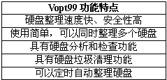
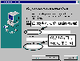
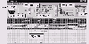
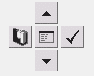

|
|
| 当前位置：电脑报电子版 > 1999 年 > 49 期 > 软件世界 > 一步一步学Vopt99 |
| 《 一步一步学Vopt99 》 |
| 不知道大家在使用Windows98自带的磁盘碎片整理程序整理硬盘时的感觉怎么样？反正我是提心吊胆：我的Quantum硬盘发出了可怕的“咔咔”声，好像是用电锯锯树；只见进度条如蚯蚓般地“蠕动”着，半天也不见结束。为此，我费了九牛二虎之力，终于找到了一个优秀的硬盘碎片整理程序，这个程序可是服务周到、动作敏捷，让我爱不释手，特向大家推荐。
一、程序下载和安装 从Vopt99的大本营http:∥wwwgoldenbowcom下载该软件当然是最方便快捷的了，该网站也可以下载专门针对NT、DOS的磁盘碎片整理程序。Vopt99目前最新的版本为41版，下载文件大小为19MB，试用期30天。在国内的http:∥wwwmydowncom网站可以下载它的40版。Vopt99的下载文件是一个安装程序文件，安装过程很简单，只是在程序要求输入注册密码的时候，在“Personal Key”栏中输入“TRIAL”，表示你只是试用。另外，在“Name”栏中输入名称时，在姓和名之间要有一个空格，如“BILL GATES”（图1）。 二、启动程序  从开始菜单中的“Vopt99”程序组中启动Vopt99。注意，Vopt99程序组中的“Quicklook”是一个快速查看硬盘的小工具，“AutoDefrag”是自动开始硬盘碎片整理。Vopt99启动后，程序界面如图2所示。在界面的上部，显示了硬盘分区的一些统计信息。“硬盘检测”栏中所显示的是关于硬盘的大小、文件夹属性、碎片统计等信息。在每次硬盘整理开始前，为了保证安全性，都要自动进行硬盘检测（默认是C盘分区）。在“文件分布”栏中显示了不同大小的文件所占用硬盘的比例。在“大文件”栏中显示那些占用空间最大的文件。注意，文件分布和大文件的统计信息，必须在进行了磁盘检查后才显示。 程序的下部，则是显示硬盘中簇的占用情况，在整理硬盘的时候则显示整理过程的详细情况。 界面上部的控制面板如图3。最左边的按钮为“开始整理硬盘”，最右边的按钮表示“检测硬盘”。上、下两个方向箭头分别表示切换到上个硬盘分区和下个硬盘分区。中间的按钮表示目前状态是“显示硬盘碎片”，我们可以在文件碎片窗口中看到碎片的多少（以红色显示）。如果你正在进行硬盘整理或检测工作，那么，中间的按钮就会变成有“Stop”字样按钮，你随时可以点击它终止当前的工作。 三、整理硬盘 使用Vopt99进行硬盘整理操作非常简单：1．选择要整理的硬盘。可以在界面中的控制面板按上下箭头选择，也可以在菜单“Disk”中选择。如果要同时整理所有的硬盘分区，可以选择菜单“Defrag/Defrag All Disk”。 2．点击控制面板中的“开始整理”的按钮（或者选择菜单“Defrag/Defragment”，程序即开始整理硬盘。我们可以在碎片窗口中看到整理的情况，在碎片窗口上面列出了各种不同簇的含义：“Fixed”，修复的簇；“Files”，文件簇；“Partial”，分区簇；“Empty”，空余的簇；“Fragments”，有碎片的簇；“Moving”，正在移动整理的簇。Vopt99整理硬盘的速度快极了，比Win98自带的磁盘整理程序至少节省三分之二的时间。 3．如果要定时整理硬盘，可以选择菜单“Presferences/Schedule”，然后在弹出的窗口中选择自动整理的间隔时间，如“Once a day”（一天）、“Once a week”（一周）。如果不需要定时整理，则选择“Never”。 注意，在进行磁盘整理的时候，最好关闭所有正在执行的程序。 四、其它工具 除了硬盘整理外，Vopt99提供了其它一些强大的工具（有些要利用Win98自带的附件）。在菜单栏中的“Tools”中，它提供了“Check Disk”（检测硬盘）、“Check All Disk”（检测所有硬盘）、“Scandisk Disk”（修复硬盘）、“Disk Cleanup”（清洁硬盘）、“Delete cookies”（删除Cookies）、“Delete temporary files”（删除临时文件）。功能项比较别致的是“HexExplore”，它可以对硬盘文件进行二进制的查看。 怎么样，很Cool吧。只要一个Vopt99就可以完成所有硬盘维护的工作了。你是不是很久没有整理你的硬盘了？那就赶快Down一个吧，Vopt99是不会让你失望的。 (江苏 张胤) |
| 下载本期推荐软件 | 页 首 |
| CPCW网站版权所有，电脑报网站编辑部设计制作发布 |